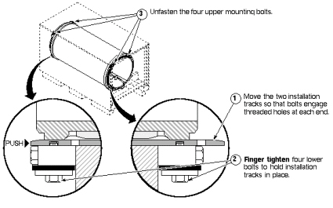
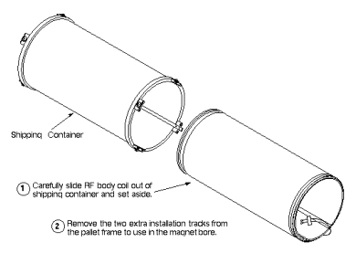
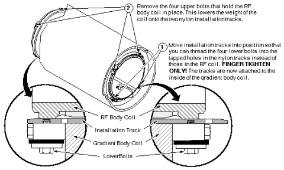
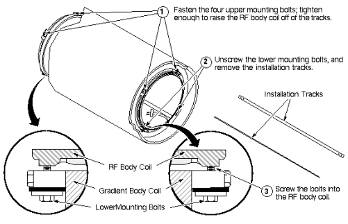
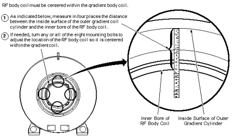

Illustration 1: UNPACKING THE NEW BRM RF BODY COIL

Illustration 1: UNPACKING THE NEW BRM RF BODY COIL
Illustration 2: SEPERATING BRM RF BODY COIL FROM SHIPPING CONTAINER

Illustration 3: SHIFTING INSTALLATION TRACKS IN BRM SHIPPING CONTAINER

| NOTE: | Possible equipment damage. Due to the size and weight of the RF Body Coil, damage to it is possible when moving it in or out of the shipping container. Use three people for this procedure. |
Illustration 4: REMOVING BRM RF BODY COIL FROM SHIPPING CONTAINER

Illustration 5: PLACING EXTRA INSTALLATION TRACKS UNDER THE BRM RF COIL

Illustration 6: ATTACHING TRACKS TO GRADIENT BODY COIL

| NOTE: | Possible equipment damage. Due to the size and weight of the RF Body Coil,k damage to the coil or the RF shielding is possible when moving the coil in or out of the magnet. Use three people to handle this procedure. |
Illustration 7: SLIDING OUT RF BODY COIL ON TRACKS

Illustration 8: SLIDING NEW RF COIL INTO PLACE

Illustration 9: RF COIL ATTACHMENT AND TRACK REMOVAL

Illustration 10: CENTERING BRM RF COIL IN GRADIENT COIL
